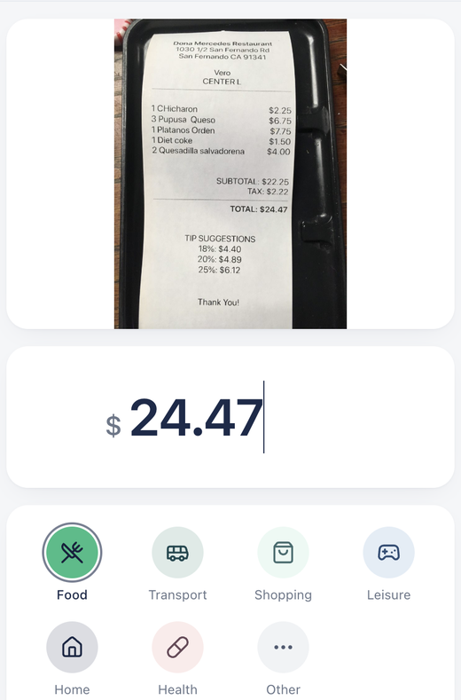
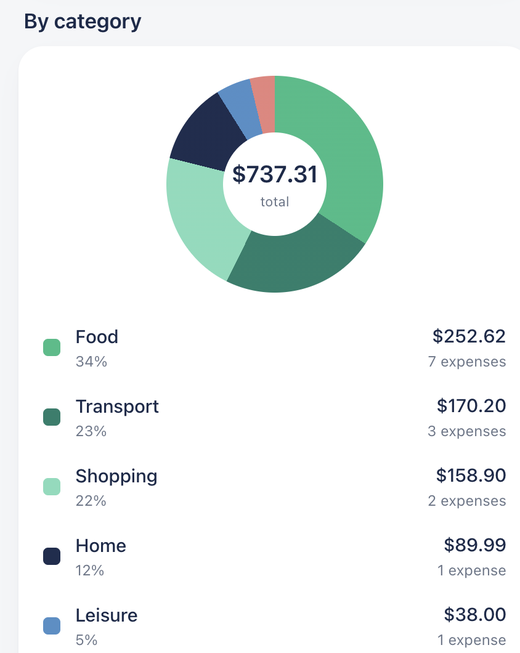
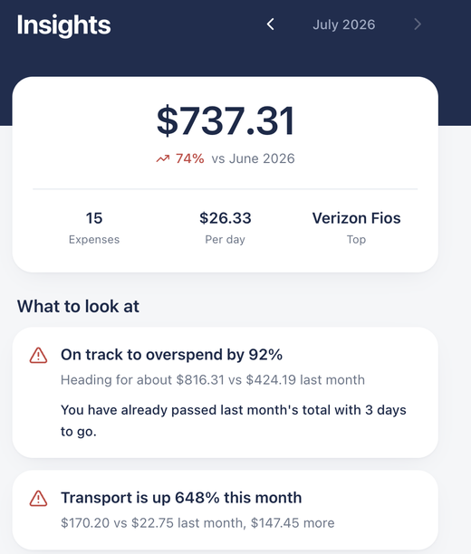

A mobile expense tracker. Photograph a receipt and GPT-4o reads the merchant,
date, total and every line item. You check it, it's saved — with the original
photo attached. Typing one in by hand takes four taps.

02 / 03The productPhoto → ledger → advice
Then it tells you something useful.

01 — UnderstandWhere it actually goesMonthly totals, category shares and a six-month trend.
Mixed currencies are never summed.

02 — ActWhat to look atRun-rate, category surges, fixed costs. Every claim carries the
numbers behind it.